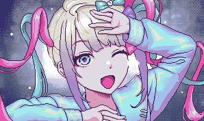

Happy End World
Quit the Internet
- ● 1 Million followers
- ● +80 Affection
- ● -80 Mental darkness
- ● Disconnect your Internet connection
KAngel posts on Tweeter declaring that she will ascend from the internet and become a real angel. Her followers start to freak out, but they soon enough follow KAngel and quit the internet with her, which leaves Tweeter as a desolate wasteland with few users left. After some unknown time, KAngel announces her return. saying, "Ask and you shall receive! The internet angel is back, cuter than ever!" After realizing that there is nobody left, she deletes the post, and the top of the feed says, "You've reached an unknown ending." A "the end" tab pops up, saying "A powerful illusion, like that of an angel's smile."
